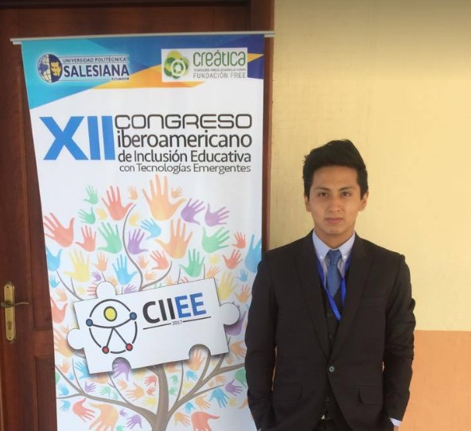
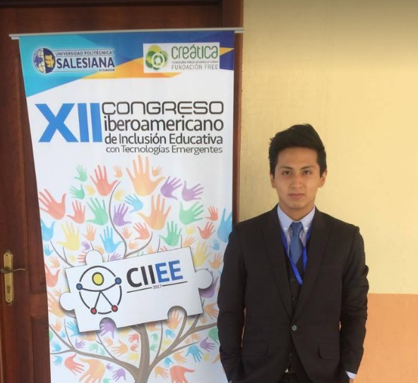

About me
I'm an Ecuadorian Engineer. Since my graduation almost 3 years ago I started working in AI. At this point I've been involved in Computer Vision, Natural Language and Speech Processing. I've worked at the Universidad Politecnica Salesiana in Ecuador under the supervision of Professor Christian Salamea, here I worked on Computer Vision developing a system to detect and locate handguns in surveillance videos, I also worked in a project about gans and collaborated in another one related with detecting vitiligo in skin images for an Ecuadorian Hospital. After that I was introduced to Speech processing and NLP, I worked for some time in Language recognition using textual and acoustic information, in this project I collaborated with the Speech Technology and Machine Learning Group at the Universidad Politecnica de Madrid working with Luis Fernando D'Haro. At the same time I worked at The Ecuadorian Research Corporation for the development of Research and Academia - Cedia researching about detecting COVID-19 using coughs, along with 3 Ecuadorian Universities. Now I'm collaborating with the Ixa Research Group in NLP working with Eneko Agirre doing research about Large Language models to perform NLI for classification tasks with little data.
Selected Publications
-- Here's my Google Scholar

"Convolutional Models for the Detection of Firearms
in Surveillance Videos".
Applied Science – MDPI
D.Romero, C. Salamea
Basel - Switzerland
[PDF]
[VIDEO]

"Phonotactic Language Recognition using a Universal Phoneme Recognizer
and a Transformer Architecture".
International Conference on Acoustics, Speech, & Signal Processing - ICAASP
D.Romero, L.F.D'Haro, C. Salamea
Singapore
[PDF]
[POSTER]
[CODE]

“Exploring Transformer-based Language Recognition using Phonotactic
Information".
Iberspeech
D.Romero, L.F.D'Haro, C. Salamea
Spain - Valladolid
[PDF]
Fun Other Projects
Robot Arm
This project was part of my first publication. This is a robot arm made in a 3D printer, and is moved by a glove through Bluetooth, it used flex sensors and was programmed with microcontrolers. It was a proposed as an alternative option for joystics that are used to drive industrial machines.


Drop Tower
This was a fun project to simulate the famous disney drop tower, this project used a stepper motor to move the plataform and it was programmed with a microcontroler, it was built to be activated with PLC.


Controlling a ball
This project had the goal of maintining the ball in the center of the rail. It had a sensor on one side to sense the ball position. It was controlled by a PID programmed in arduino .
Portraits
I make this portrait of Guayasamin (Famous Ecuadorian Painter) using an algorithm based on masks and attention centers.
Some Photos


 
